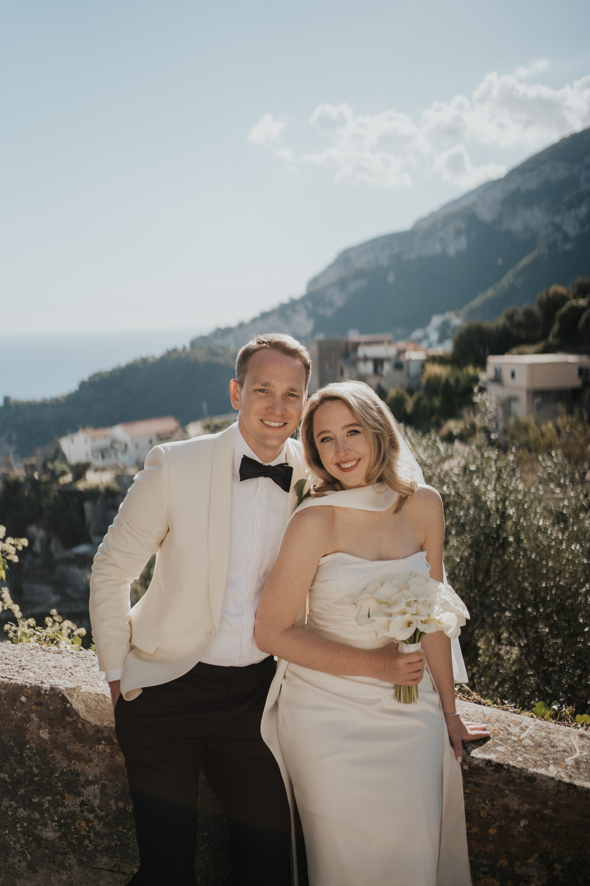

Intimità sul Mediterraneo

Due mani unite.
Un solo amore.
Il modo in cui vi state accanto appartiene già alla vostra storia. Nel giorno del matrimonio, anche un gesto abituale può diventare un ricordo preciso.

Il modo in cui vi state accanto appartiene già alla vostra storia. Nel giorno del matrimonio, anche un gesto abituale può diventare un ricordo preciso.